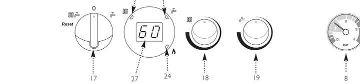

This fascia has a reset selector, a round temperature display, a radiator knob (18) and a tap knob (19). It is the usual layout on Promax Combi 24, 28 and 33. Main Eco uses the same family of controls. It is not the later two-knob LCD Duo-tec style.

- Knob 18 with the radiator symbol is heating flow. Knob 19 with the tap is hot water — leave that if you only came to lower the heating.
- Turn the radiator knob until the display shows the flow you want. Typical range is about 30°C to 80°C.
- Stop around 55°C if the house still warms. Add time on the programmer if rooms take longer to come up.
Video
Look up your exact model on Boiler Manuals if the fascia does not match. Then return to the Potterton flow-temperature page or the Boiler Optimiser.